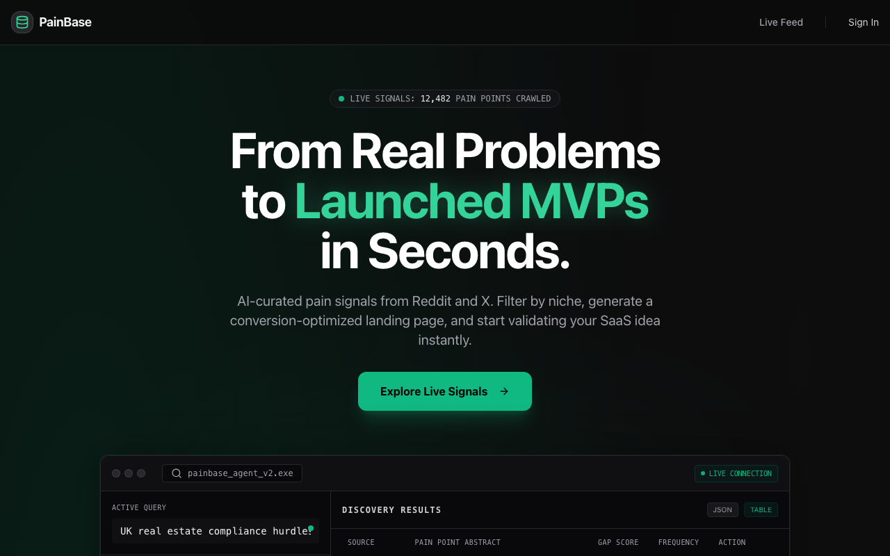
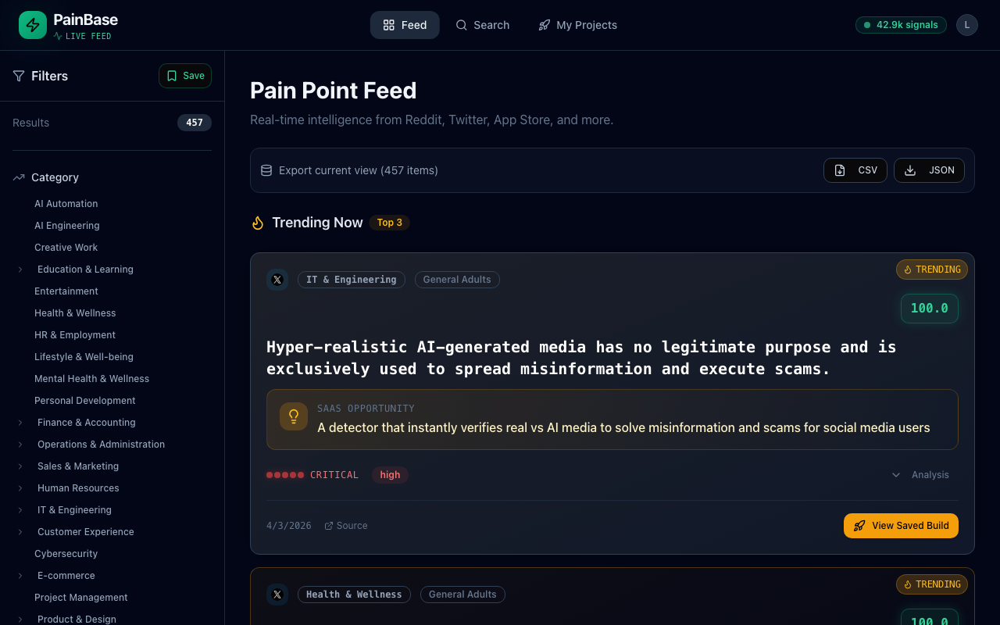
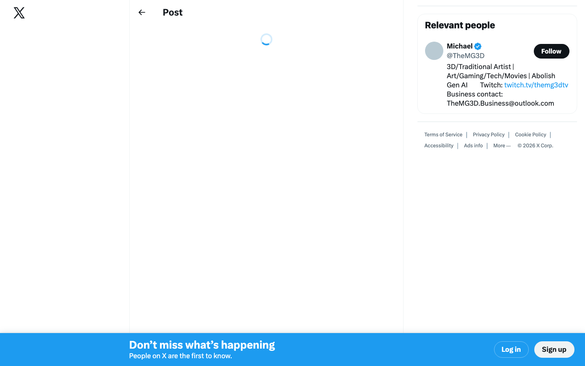
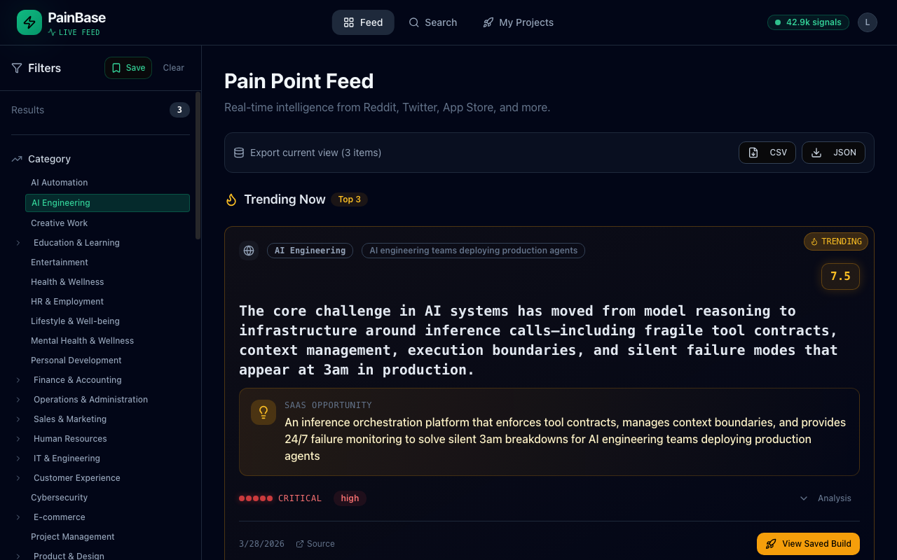
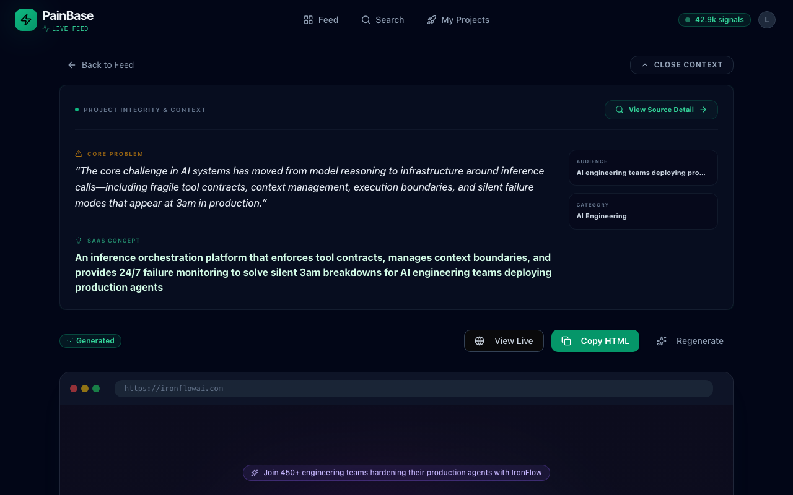
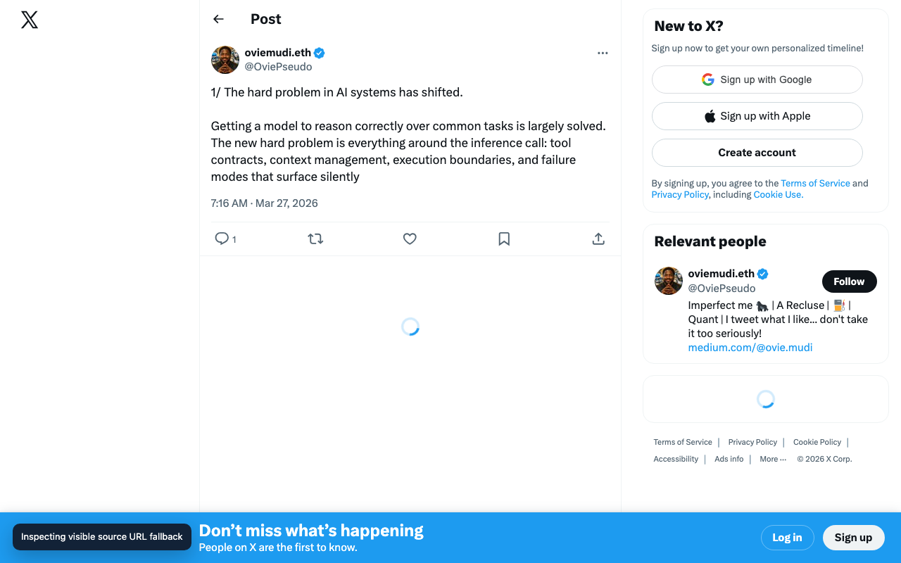
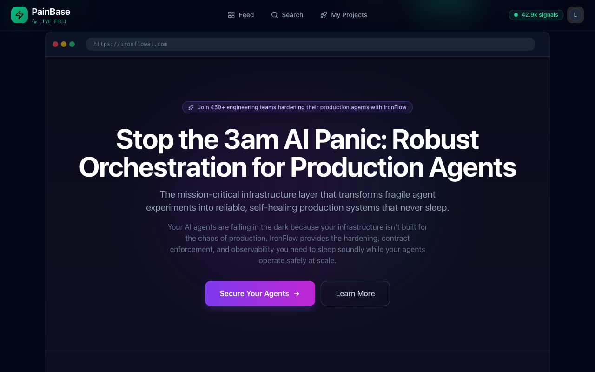
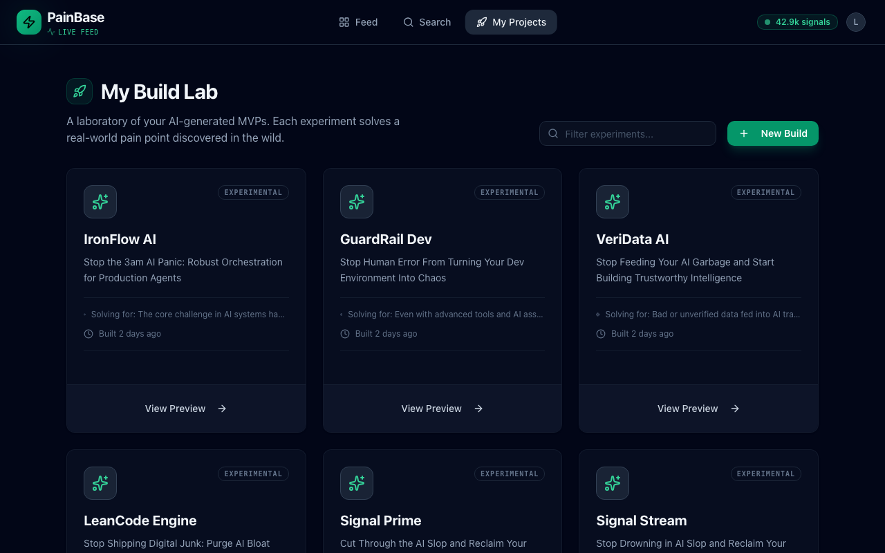

PainBase immediately maps to Marcus's existing behavior: he already mines Reddit/X manually, so a searchable pain-point feed plus build workflow feels relevant before he sees any generated artifact.

The feed exposes volume and categories, which reassures Marcus that this is not a toy database. His next instinct is not to click blindly; it is to filter toward developer-adjacent categories and verify whether the listed pain is real.

Marcus wants evidence. Opening the source in a separate tab is realistic: a technical buyer expects to skim the original thread, judge whether it is a real complaint, then return to PainBase. X login pressure is an external friction, not proof that PainBase data is fake.

Filtering into AI Engineering surfaces a pain point about infrastructure around inference calls, tool contracts, context management, and failure modes. This is exactly the kind of developer-native problem Marcus can imagine packaging as a micro-SaaS.

The landing page generator is the strongest activation point. Marcus gets a product name, positioning, sections, pricing, FAQ, and copy that is good enough to start validation. This changes PainBase from research database to build accelerator.

When the original source is readable, the pain point becomes much more credible. Marcus can connect the generated MVP back to the actual complaint language and decide whether this is market signal or just noise.

The preview itself looks strong: clear hero, developer-oriented problem framing, and a coherent product narrative. The uncertainty is not copy quality; it is artifact ownership. A technical user wants to know if this is shareable, downloadable, deployable, and whether any suggested URL is actually available.

Saved builds make PainBase feel like a workflow, not a one-off generator. But Marcus will quickly accumulate experiments and needs control: keep only the most relevant projects, rename them, archive weak ideas, and remove duplicates.
The account state showed Pro access, but Marcus still could not answer the buyer question: what does this cost, what is included, when am I billed, and how do I manage or cancel it? For a price-sensitive indie hacker, plan transparency is a trust signal.
Two observations were affected by the test harness rather than clear product behavior: View Live sometimes opened an about:blank tab that the automation could not visually read, and Copy HTML feedback was partially polluted by a side panel/forced click. Manual verification showed View Live can render content and Copy HTML can show a Copied state.